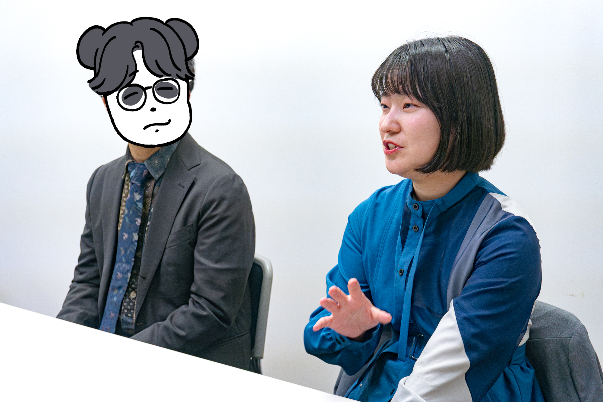
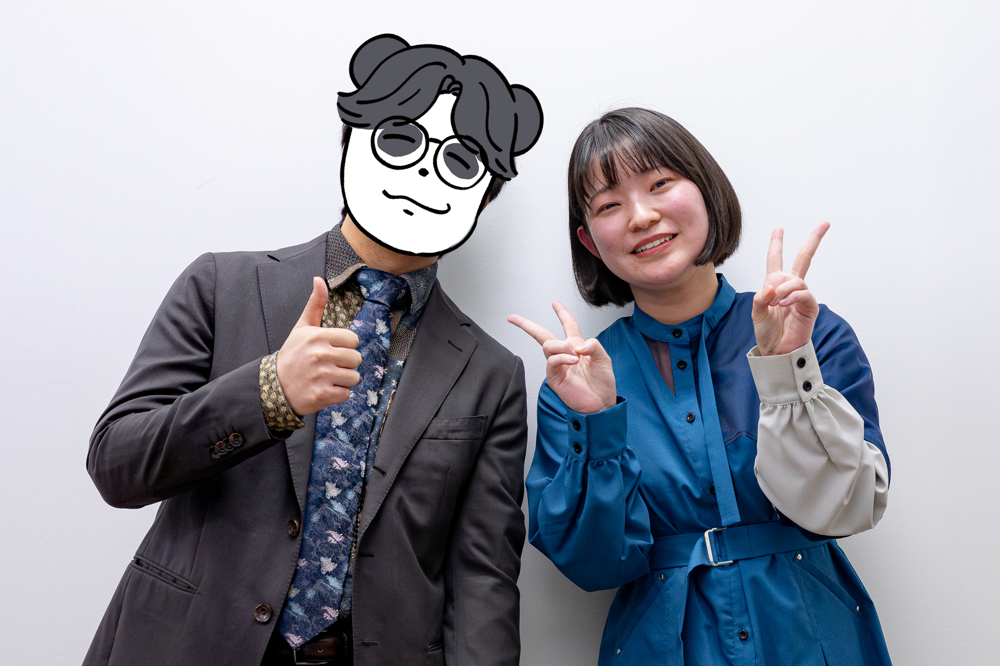

2019年結成、大学のお笑いサークルで出会った二人。
現在は福岡で社会人として働きながら舞台に立ち続ける「パッチワークパンダ」。
仕事とお笑い、二つの顔を持つ彼らの結成秘話から、福岡のお笑いシーンへの想いまで、じっくりと語っていただきました。

田代田代（写真左）・関野アミ（写真右）
- 2000年1月21日生まれ / 福岡県北九州市出身
- 趣味・特技：ジャム作り、パントマイム（初歩的なもの）
- 職業：非公開
- 1999年5月25日生まれ / 福岡県出身・千葉県育ち
- 趣味・特技：ホラー映画、旅行、語学（英語）、音ゲー
- 職業：金融
- X：@amiraspberry525
ーー結成はいつですか？
田代田代（以下、田代）：2019年7月2日です。
ーーコンビ結成のきっかけを教えてください。
田代：きっかけはですね、自分が大学のお笑いサークルに入ってて、もともとは高校の同級生と入ってたんですけど。その子が、かなりシャイな子で。誘われて入ったんですけど、その子が舞台に出られないってなってですね。恥ずかしくなっちゃって。
で、大学のお笑いサークルって同級生が同じタイミングでコンビ組んで、っていう形で活動していくんですけど、途中でコンビが無くなった自分は組む人がいなくなっちゃって。
そのタイミングで関野は観る専門としてサークルに入っていたんです。
関野アミ（以下、アミ）：そう！
田代：その時に、「お笑いやってみたい」って話を聞いてそこから組み始めたと。なんというか、組むならこの人しかいなかったという現状ですね。それで組みましたね。
ーーアミさんはそもそもどうしてお笑いサークルに入ったんですか？
アミ：もともとうちの家系がお笑いめちゃくちゃ好きで、両親とも好きで。そういう環境で育っちゃったんで、ずっとテレビもバラエティが流れてるみたいな感じだったので私もお笑い好きになって。
高校まで千葉県にいたんで、ルミネに行ったりとか、幕張に学校帰りに行ったりとかして。で、現実的に考えて、自分が芸人になるとかは無理だなと思って。
父親の仕事の関係で福岡に引っ越してて、「お笑いサークルに入って友達作んなきゃ」ってなって入って観る専でやってたけど、見てるうちに「自分もやっぱやってみたいかも」ってなって（田代さんに）声をかけたって感じです。
ーーパッチワークパンダのコンビ名の由来を教えてください。
田代：これはもう思うツボなんですよ。
アミ：（笑）
田代：自分がいくつかコンビ名を出してきたんですけど、正直ほぼ初対面なんですよ、組むってなったタイミングも。だから、今までは男性とコンビを組んでいて、今度は女性と男女コンビってなった時にどういうコンビ名がいいかもわからなくて。
っていう中で、自分がやりたいなって思うコンビ名をいろいろ入れてた中に一つだけ、可愛げのあるものを紛れ込ませたんですね。そしたら、「この中のどれがいい？」って聞いたら、「パッチワークパンダ」を選んできて。
アミ：はい、まんまと（笑）
田代：そこは裏切りとかあれよ、と思いながら。でもこれになっちゃってっていう感じでここまできましたね。
ーーお笑いをやろうと思ったきっかけを教えてください。
田代：サークルに自分は誘われて入ってるんで、「やろう！」とも思ってないっていうとあれですけど。その中でやってみると、しっかりやればしっかり成果が残る場ではあったので。結構そういう、ちゃんとやったら結果が出るってことが好きなんで、そこにのめり込んで入った感じがありますね。
ーー社会人になっても継続してお笑いを続けた理由を教えてください。
田代：そうですね。自分たちが学生の頃が一番本来こういう活動はやりやすいんでしょうけど、その時がちょうどコロナ禍で、舞台数もなくて。自分たちが4年生で卒業するぐらいのタイミングで、今活動している大名のライブに呼ばれ始めて。
その上で、結果的に二人とも福岡で職に就いて、現状ライブからの誘いもある状況だったので、だったら続けてみようかっていうところで続けたって感じですね。
ーーお笑いライブの魅力はどんなところだと思いますか？
田代：まず、自分たちが出てる側の魅力でいくと、自分がやりたいことを5分間やれる場って無いじゃないですか。社会においても、大学でも無いと思うんで。っていうところで、5分間でやりたいことをできる、っていうところにリアクションがリアルタイムで返ってくる、その魅力はあると思います。
実際、だからこそ変な人は多いんですね、良くも悪くも（笑）その非日常を感じられるのは観てる人側の魅力かなと思います。そこに、テレビの芸人さんとも違って距離が近いから話す機会とかもあって、っていうところは応援しがいがあるのかな？とは思います。そういうところが今自分たちがやってるライブシーンの魅力かなと思います。
アミ：観る側としては、私は親が近くのイオンとかに芸人さんが来たら「行くよ！」って感じの家系で育ってるから、そこでしか観られないネタがあったりとか、単独ライブでもここでしかやりませんみたいなのがあって。トークコーナーとか大喜利コーナーでもここでしか観られない一面とかもあるので、ファンとしてはそこが観れるのはだいぶ貴重かなと思います。なので絶対生の方がいいなと私は思います。
田代：結構お笑いファンなんですよね、あなたが。
アミ：うんうん。
田代：そんな素ぶり見せない感じがあるので、舞台上では。
アミ：かなり好き。
田代：もっと見せていってほしいんですけど。どういうファンなの？
アミ：私元々、「メイプル超合金」が好きだったりとか。親がめちゃくちゃ好きだから、すごい全部見せられてる感じ。
田代：うん。
アミ：ネタ番組も全部、エンタとかも全部通ってきてるし。だからいろんな単独ライブとかも観にいってて。「かもめんたる」とか、「オードリー」とかも行って。「NON STYLE」とかも一通り連れて行かれた感じはあります。
ーーそれはいくつぐらいの時ですか？
アミ：ずっと、幼稚園の時とかも行ってたから。幼稚園は熊本で営業とかに行って、小学校に入って千葉県に行ってそこでルミネに行ったりとか。ちょうど高校ぐらいの時に幕張のイオンモールに劇場ができて。そこで「霜降り明星」がM-1を獲る前の単独に行ったりとか。結構、貴重なライブとかは観てきました。
ーー福岡でお笑いをやることの魅力を教えてください。
田代：結構、誰でも参加できるっていうのがすごいあるのかなって思っていて。なんで、東京とか大阪のシーンを決して詳しいわけじゃ無いんですけど、実際、東京大阪の方が充実はしてると思うんですよ。
っていう中で、福岡は、他のカルチャーで言ったらなかなか「音楽やりたい！」ってなっても場がない中で、今福岡でこれだけ参加する場があって、月に2回くらいあるっていう場の多さと参加のしやすさっていうのは魅力だと思いますし。なにより、自分は福岡のライブシーンで文脈が少ないのがすごい良いと思ってるんですよ。
学生芸人とかが東京では栄えてたり、大阪は大阪で芸人の一派とかもあるから前提知識が必要だったり、逆にそういうものがあってウケるとか、っていう場が多い印象なんですよね。っていうのが、福岡はあんまり無いんで、いろんなことをしやすいっていうのがあるのかなと思います。自分たちは、そんなにプライベートが見えてこないのかなって思っていて、逆にそういうところではやりやすかったりはしますね。
ーーアミさんはなんだと思いますか？
アミ：えー、ほぼほぼ言われちゃったもんな。
田代：嘘つけ！思っても無いだろ、そんなこと。
ーーアミさんが金融系のお仕事を選んだ理由を教えてください。
アミ：私は、お笑いを続ける気だったので、それが就活の軸で。土日祝休みで残業が全然無い。給料も基本給普通くらい、で考えたら銀行ぐらいで。法律の銀行法で定められてるから休日出勤が無い、みたいな。就活したのは、銀行・カード・証券会社・塾。その４つを受けて、就活の軸は「お笑い」でした。
ーー働きながら芸人をしていて良かったことと大変なことを教えてください。
田代：仕事のことを休みの時に考えなくていいっていうのはすごく良いと思います。実際、やってても仕事のことがチラついてしまうものってあると思うんですけど、舞台に立ってる時は忘れなきゃしょうがないんで。そういったところで、うまくスイッチが切り替えられるっていうのはありますし。仕事先でこういうことをやってるっていうのは、話のタネにすごくなるので、そういうところはやってて良かったことの一つかなと思います。
田代：あなたやっててよかったことは？
アミ：やっててよかったことは、もちろん話のタネにもなるし、お客さんと接してて覚えてもらえるっていうのは大きいなと思います。そこからどんどん話が広がって、営業につながることもあるし。職場の人も、ほとんど私のこと知ってて。うちの支店に来たら絶対話しかけてもらえる、みたいなことがあったりします。
ーー今後の目標はありますか？
田代：そうですね。あなた何かあります？目標。
アミ：目標？でも、やりたいことは、福岡から出て違う所のライブに出てみたいっていうのはあります。賞レースとかも。
ーーそれはどうしてそう思うようになったんですか？
アミ：一緒にライブに出てる他の人も、大阪・東京に行ったりとか、千葉に住んでた時の友達も東京でライブに出てて、やっぱり聞くところによるとちょっとうちのライブとは違うなって感じがあって。どんな感じなのかすごい気になるなって（笑）好奇心だけで出てみたいっていうのはあります。
田代：こういうのやりたいとかは無いの？
アミ：向こうでやりたい？そうね、まあ、一回出てみたいんだよね。
田代：なるほど（笑）別にどの土地に行きたいとかはないのね。違う場を体験したい？
アミ：一回体験してみたい！
田代：なるほど。まあそうみたいです。
田代：自分は、賞レースを頑張りたいなと思ってるんですけど。それに付随する形でもうちょっと「これだな」って思えるネタをしっかり作っていきたいっていうのはありますね。やっぱり自分はモノを作るのが好きなので、今こうやって続いているんだと思うんですよね。
なので、今は基本ちょっと変わったことをやってるんですけど、あんまり思われてないくらいだったりするんで。変わったことをやってる印象をつけたいわけじゃないんですけど、自分たちがこんな漫才をやってるっていうのを思わせるような、自分が納得できるようなものを作りたいなと思います。
取材／木村 撮影／山田
「お悩み解決編」近日公開！